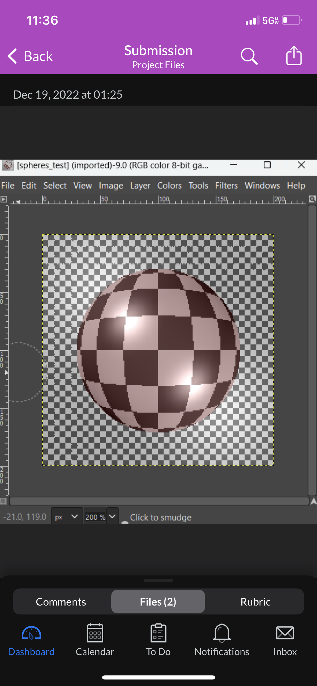
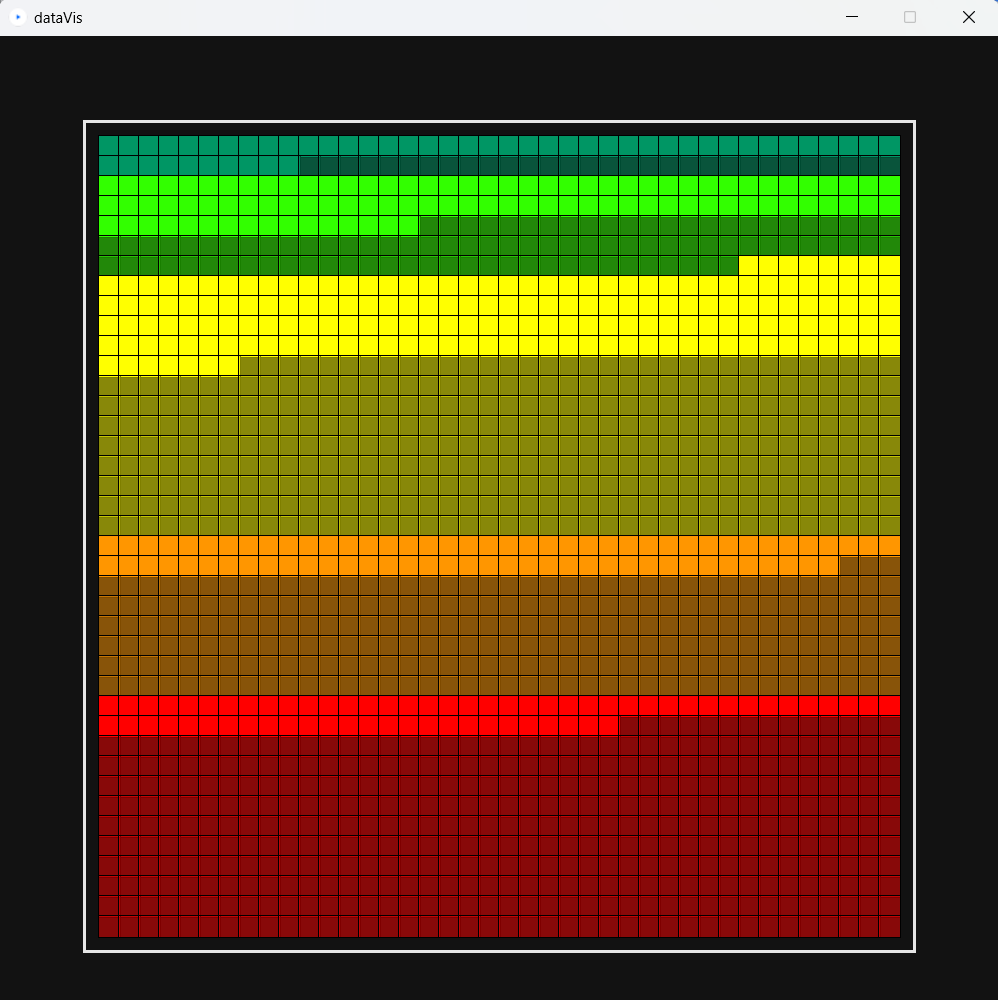
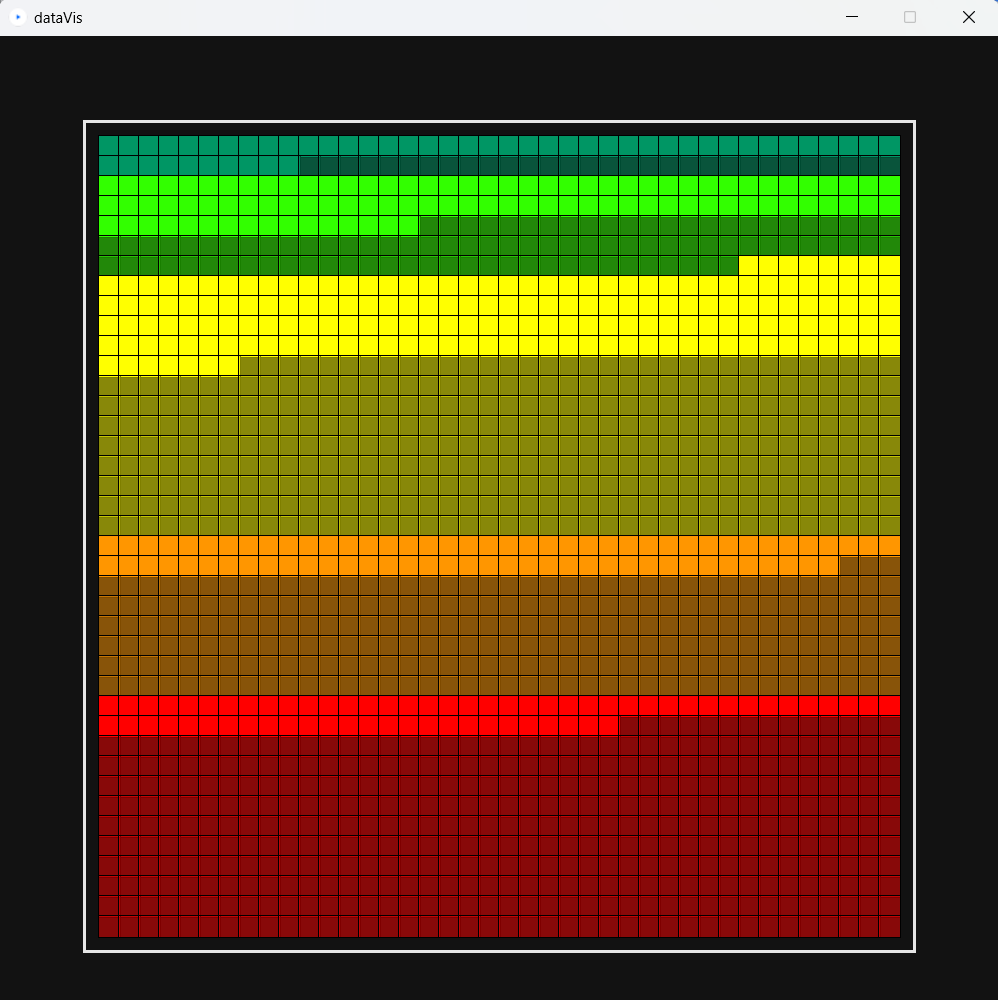

Bio
Thesis
Manifesto
Abstraction
Technology
Culture
HCI
Henry K. Young
is 22 years old from Portland, Oregon. He is a student at Whitman College majoring in Theory and Practice in Digital Design. The individually planned major combines new media art, computer science, and art history with a focus on modern art and architecture. He realized he was interested in design in highschool after taking a summer course at Sci-Arc. Henry uses processing, figma, and various coding languages to create interactive interfaces, reflecting his Brutalist inspired style. He is familiar with python, C++, java, and html/javascript. Henry hopes to explore a career in User Experience Design or Architecture.
Adaptive Reuse of Brutalism
Manifesto
Abstraction1
Technology1


Culture
Human Computer Interaction
Manifesto:
If we are to consider true originality with every building and we should always be considering new ways of visualizing the values we are trying to convey. And while the hubristic ambition of universalism was imposing on time and place, a fluid visual system based on values would be neither tied to time nor place. The skill of the architect then, would be to translate those values into the signifiers of that time in place. It isn’t the ambition of modernism that should be removed, it is the hubris. It isn’t the optimism that should be removed, it is naivete. It isn’t originality and forward looking that should be removed from modernism, it is that the assumption that we can anticipate everything in the future, and that utopianism will always suit the present. Earnestness is a defining characteristic of modernism that shouldn’t be removed. This is not to say that things should be style-less. Modernism sought to be primitive, pure, and universal. This only lead to a style of its own. If we are to let form follow value, we will never have this problem again. Releasing architectural movements from style would force the public to think more critically
Academia is about dialogue, proving and disproving, and critiquing, but I feel uneasy critiquing the ideas of others when I can’t provide better ones myself, or at least provide alternatives.
It is better to be ambitious and fail than to do nothing at all. It is better to offend than fearfully avoid it. Failed experiments lead to greater insights than successes ever could. Patterns can represent a progression, movement, change in some contexts, when a pattern is randomized it suddenly becomes texture. Texture is just an example of a fluid design system. Something recognizably the same, while no one thing is repeated. Coding lends itself extremely well to this type of work. I want to experiment with color like Albers, I want to experiment with forms, I want to experiment with representation and abstraction. Above all, I want to see the patterns on a massive scale, because its not until you see the pattern at the macro level do you truly start to understand the rules that govern it. It is the same with culture. If one person displays certain behaviors or inclinations, it is chance, coincidence. If it happens many times repeatedly, it is no coincidence. This is what I think many modernists mean by zeitgeist.
In both international style and brutalism many have identified that style has limited the movements, limiting their capabilities. It is because many architects blindly followed, mimicking the style of the greats assuming their buildings would communicate the same ideals. The problem was not that they incorrectly implemented the style, it was that they weren’t doing anything new, not offending, they were not contributing another take. If everyone was to contribute their own attempt at a single goal, not only would our. With technical problems it makes sense to use a “don’t recreate the wheel,” with creative problems we should be diversifying our approach.
Technology is not fascinating in itself. It is how we use it, interact with it that gives it purpose. Software and the web are the main forms of media in our current society, and I felt that to use it, to understand it, I needed to know some of the basics of computer science. It also gives the highest degree of freedom, far more than most design tools, you are only limited by your own imagination.


If we are to consider true originality with every building and we should always be considering new ways of visualizing the values we are trying to convey. And while the hubristic ambition of universalism was imposing on time and place, a fluid visual system based on values would be neither tied to time nor place. The skill of the architect then, would be to translate those values into the signifiers of that time in place. It isn’t the ambition of modernism that should be removed, it is the hubris. It isn’t the optimism that should be removed, it is naivete. It isn’t originality and forward looking that should be removed from modernism, it is that the assumption that we can anticipate everything in the future, and that utopianism will always suit the present. Earnestness is a defining characteristic of modernism that shouldn’t be removed. This is not to say that things should be style-less. Modernism sought to be primitive, pure, and universal. This only lead to a style of its own. If we are to let form follow value, we will never have this problem again. Releasing architectural movements from style would force the public to think more critically Academia is about dialogue, proving and disproving, and critiquing, but I feel uneasy critiquing the ideas of others when I can’t provide better ones myself, or at least provide alternatives. It is better to be ambitious and fail than to do nothing at all. It is better to offend than fearfully avoid it. Failed experiments lead to greater insights than successes ever could. Patterns can represent a progression, movement, change in some contexts, when a pattern is randomized it suddenly becomes texture. Texture is just an example of a fluid design system. Something recognizably the same, while no one thing is repeated. Coding lends itself extremely well to this type of work. I want to experiment with color like Albers, I want to experiment with forms, I want to experiment with representation and abstraction. Above all, I want to see the patterns on a massive scale, because its not until you see the pattern at the macro level do you truly start to understand the rules that govern it. It is the same with culture. If one person displays certain behaviors or inclinations, it is chance, coincidence. If it happens many times repeatedly, it is no coincidence. This is what I think many modernists mean by zeitgeist. In both international style and brutalism many have identified that style has limited the movements, limiting their capabilities. It is because many architects blindly followed, mimicking the style of the greats assuming their buildings would communicate the same ideals. The problem was not that they incorrectly implemented the style, it was that they weren’t doing anything new, not offending, they were not contributing another take. If everyone was to contribute their own attempt at a single goal, not only would our. With technical problems it makes sense to use a “don’t recreate the wheel,” with creative problems we should be diversifying our approach. Technology is not fascinating in itself. It is how we use it, interact with it that gives it purpose. Software and the web are the main forms of media in our current society, and I felt that to use it, to understand it, I needed to know some of the basics of computer science. It also gives the highest degree of freedom, far more than most design tools, you are only limited by your own imagination.

 

If we are to consider true originality with every building and we should always be considering new ways of visualizing the values we are trying to convey. And while the hubristic ambition of universalism was imposing on time and place, a fluid visual system based on values would be neither tied to time nor place. The skill of the architect then, would be to translate those values into the signifiers of that time in place. It isn’t the ambition of modernism that should be removed, it is the hubris. It isn’t the optimism that should be removed, it is naivete. It isn’t originality and forward looking that should be removed from modernism, it is that the assumption that we can anticipate everything in the future, and that utopianism will always suit the present. Earnestness is a defining characteristic of modernism that shouldn’t be removed. This is not to say that things should be style-less. Modernism sought to be primitive, pure, and universal. This only lead to a style of its own. If we are to let form follow value, we will never have this problem again. Releasing architectural movements from style would force the public to think more critically Academia is about dialogue, proving and disproving, and critiquing, but I feel uneasy critiquing the ideas of others when I can’t provide better ones myself, or at least provide alternatives. It is better to be ambitious and fail than to do nothing at all. It is better to offend than fearfully avoid it. Failed experiments lead to greater insights than successes ever could. Patterns can represent a progression, movement, change in some contexts, when a pattern is randomized it suddenly becomes texture. Texture is just an example of a fluid design system. Something recognizably the same, while no one thing is repeated. Coding lends itself extremely well to this type of work. I want to experiment with color like Albers, I want to experiment with forms, I want to experiment with representation and abstraction. Above all, I want to see the patterns on a massive scale, because its not until you see the pattern at the macro level do you truly start to understand the rules that govern it. It is the same with culture. If one person displays certain behaviors or inclinations, it is chance, coincidence. If it happens many times repeatedly, it is no coincidence. This is what I think many modernists mean by zeitgeist. In both international style and brutalism many have identified that style has limited the movements, limiting their capabilities. It is because many architects blindly followed, mimicking the style of the greats assuming their buildings would communicate the same ideals. The problem was not that they incorrectly implemented the style, it was that they weren’t doing anything new, not offending, they were not contributing another take. If everyone was to contribute their own attempt at a single goal, not only would our. With technical problems it makes sense to use a “don’t recreate the wheel,” with creative problems we should be diversifying our approach. Technology is not fascinating in itself. It is how we use it, interact with it that gives it purpose. Software and the web are the main forms of media in our current society, and I felt that to use it, to understand it, I needed to know some of the basics of computer science. It also gives the highest degree of freedom, far more than most design tools, you are only limited by your own imagination.
If we are to consider true originality with every building and we should always be considering new ways of visualizing the values we are trying to convey. And while the hubristic ambition of universalism was imposing on time and place, a fluid visual system based on values would be neither tied to time nor place. The skill of the architect then, would be to translate those values into the signifiers of that time in place. It isn’t the ambition of modernism that should be removed, it is the hubris. It isn’t the optimism that should be removed, it is naivete. It isn’t originality and forward looking that should be removed from modernism, it is that the assumption that we can anticipate everything in the future, and that utopianism will always suit the present. Earnestness is a defining characteristic of modernism that shouldn’t be removed. This is not to say that things should be style-less. Modernism sought to be primitive, pure, and universal. This only lead to a style of its own. If we are to let form follow value, we will never have this problem again. Releasing architectural movements from style would force the public to think more critically Academia is about dialogue, proving and disproving, and critiquing, but I feel uneasy critiquing the ideas of others when I can’t provide better ones myself, or at least provide alternatives. It is better to be ambitious and fail than to do nothing at all. It is better to offend than fearfully avoid it. Failed experiments lead to greater insights than successes ever could. Patterns can represent a progression, movement, change in some contexts, when a pattern is randomized it suddenly becomes texture. Texture is just an example of a fluid design system. Something recognizably the same, while no one thing is repeated. Coding lends itself extremely well to this type of work. I want to experiment with color like Albers, I want to experiment with forms, I want to experiment with representation and abstraction. Above all, I want to see the patterns on a massive scale, because its not until you see the pattern at the macro level do you truly start to understand the rules that govern it. It is the same with culture. If one person displays certain behaviors or inclinations, it is chance, coincidence. If it happens many times repeatedly, it is no coincidence. This is what I think many modernists mean by zeitgeist. In both international style and brutalism many have identified that style has limited the movements, limiting their capabilities. It is because many architects blindly followed, mimicking the style of the greats assuming their buildings would communicate the same ideals. The problem was not that they incorrectly implemented the style, it was that they weren’t doing anything new, not offending, they were not contributing another take. If everyone was to contribute their own attempt at a single goal, not only would our. With technical problems it makes sense to use a “don’t recreate the wheel,” with creative problems we should be diversifying our approach. Technology is not fascinating in itself. It is how we use it, interact with it that gives it purpose. Software and the web are the main forms of media in our current society, and I felt that to use it, to understand it, I needed to know some of the basics of computer science. It also gives the highest degree of freedom, far more than most design tools, you are only limited by your own imagination.